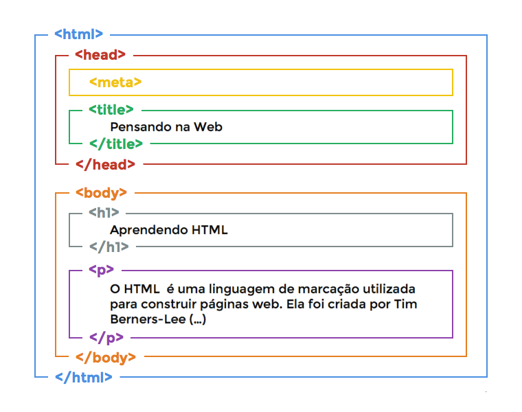

Aprender a instalar e configurar o ambiente de desenvolvimento. Entender o funcionamento do inspetor de elementos do navegador e criar sua primeira página HTML.
As linguagens mais usadas para o desenvolvimento web incluem HTML, CSS, JavaScript, Angular, TypeScript, React, PHP e Python. Como você deve imaginar, cada uma possui características e funcionalidades que contribuem para a construção e manutenção de sites e aplicativos web
Inspecionar – Isto é chamado de Elementos em alguns navegadores. É a tela principal da ferramenta Inspecionar Elemento e mostra o código da página, juntamente com o CSS específico do elemento.
Para acessá-la, abra a ferramenta de inspeção de elementos, e pressione o atalho: Ctrl + Shift + F no windows ou Cmd + Shift + F no Mac. Com a caixa de pesquisa aberta, você poderá pesquisar o código desejado e os resultados relevantes ficarão em destaque.
A estrutura básica é entendida como o modo pelo qual as principais instituições sociais ajustam-se em um sistema, determinam direitos e deveres fundamentais e modelam a divisão das vantagens que surgem através da cooperação social”.
HTML, ou HyperText Markup Language, é a espinha dorsal da web. É uma linguagem de marcação que define a estrutura e o conteúdo das páginas da web. As tags HTML são os blocos de construção fundamentais do HTML, usadas para estruturar o conteúdo de uma página.
As tags HTML são escritas entre colchetes angulares < > e geralmente ocorrem em pares: uma tag de abertura e uma tag de fechamento.
Quais são os tipos de tags HTML? As tags HTML são divididas em várias categorias, cada uma com uma função específica. Aqui estão algumas das categorias mais comuns: Tags de estruturação de texto: essas tags são usadas para estruturar o texto em parágrafos, títulos, listas e outros elementos. Exemplos: p, h1 a h6, ul, ol, li, entre outras; Tags de links e imagens: essas tags são usadas para criar links para outras páginas ou para incluir imagens. Exemplos: para links e img para imagens; Tags de estilo: o estilo de uma página pode ser definido usando CSS (Cascading Style Sheets), mas há tags HTML usadas para isso. Exemplos: i, strong entre outras;
Há dois tipos de atributos no HTML, os globais, aceitos por todas as tags, como, por exemplo: class, id, lang, style e algumas outras que você pode conferir na documentação; e também existem os específicos, que somente algumas tags possuem, como: src, disabled, href, label, etc.
Clique para executar uma página HTML
Uma lista não ordenada é uma lista de itens. As listas de itens são marcadas com bullets (tipicamente pequenos círculos pretos).
Uma lista não ordenada começa com a tag < ul >. Cada item da lista começa com a tag < li >.
Aqui está como aparece em um navegador:
Dentro de um item de uma lista você pode colocar parágrafos, quebras de linha, imagens, vínculos, outras listas, etc.
Uma lista ordenada é também uma lista de itens. As listas de itens são marcadas com números.
Uma lista ordenada começa com a tag < ol >. Cada item da lista começa com a tag < li >.
Aqui está como aparece em um navagador:
Dentro de um item de uma lista você pode colocar parágrafos, quebras de linha, imagens, vínculos, outras listas, etc.
Utilize os elementos < a > e < /a > no endereço e no texto do link e veja como criar um link em HTML. Em seguida, adicione o atributo href para indicar que o link direcionará os usuários para outro local. Especifique o seu URL e o texto âncora.